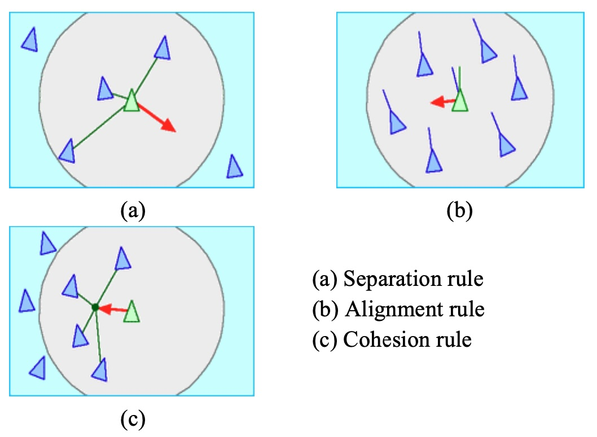

Bird Flocking Talk - Shire Oak School
Here is a video of a starling murmuration
Link on Youtube if embedded video doesn't work
How do birds flock?
Who tells them where to go? Is there a leader?

Here is a game where you can simulate a bird flock
Here is anotherk